{kind=link}
Figure 2

Riemann for Anti-Dummies Part 49
THE HIDDEN HISTORY OF THE COMPLEX DOMAIN
When Kepler discovered the elliptical nature of the planetary orbits, he uncovered a paradox whose solution would require the development of an entirely new way of thinking, and he called on future generations to develop it. This "Kepler Problem", as it has since become known, was not merely a mathematical lacuna, but reflected the ontological paradox indicated by Nicholas of Cusa in "On Learned Ignorance" and other locations. Kepler's demand provoked Leibniz to develop the infinitesimal calculus, which revealed a new manifestation of that same paradox. This led Leibniz to indicate that the solution existed in a higher, yet to be discovered, domain of the imagination. Reflecting on these developments, the young Carl F. Gauss discovered that what both Kepler and Leibniz had sought. He called it the complex domain.
The above sketch is the true history of the origin of the discovery of the complex domain. It was known to Gauss's immediate collaborators and followers, but today it lies hidden, even to the relatively best scientific thinkers. What has been substituted is the myth that complex numbers arise as "impossible" solutions to formal algebraic equations a myth whose malignancy has infected today's popular thinking far beyond the domain of pure mathematics. The source of the myth is not new, but begins with Venice's Paolo Sarpi's launching of modern empiricism, and continues as a progression of degeneration through Hobbes, Descartes, Newton, Euler, Kant, Lagrange, Hegel, Cauchy, Klein, and down into the modern forms of existentialism and information theory associated with Synarchism. Today, as always, its target is the intellectual and emotional powers of mind associated with the development of the nation state, as embodied in the hard won Declaration of Independence and Constitution of the United States.
Consequently, anyone wishing to know the principles of science, must understand the connection between the history of the development of the complex domain, and the fight for the founding and preservation of the United States. Conversely, anyone wishing to know the latter, must understand its connection to the discovery of the complex domain.
For this reason, it is crucial that the record be set straight.
What follows is a summary overview. An opening statement, so to speak, designed to lay out what the investigation will show. It is best worked through slowly in small discussion groups. Over the coming installments of this series, we will explore these matters more deeply. This will take us, albeit not without a certain amount of hard work, directly to Riemann's investigation of the higher transcendentals which he called Abelian functions.
The "Kepler Problem"
The ultimate source of Kepler's discovery of the planetary orbits lies not in some particular astronomical theorem, but, as Kepler repeatedly emphasized, in his conception of Man. Unlike Ptolemy, Copernicus, and Tycho Brahe, Kepler understood that Man was distinguished from lower forms of life, by the capacity of mind that enabled him to rise above the limitations of sense-perception and discover those unsensed principles that govern the universe. As such, Kepler rejected the Aristotelean methods of Ptolemy, Copernicus and Brahe, all of which sought only to model the appearances of the motion of the heavenly bodies. Instead, as Kepler emphasized, his approach was to derive the apparent motion of the planets as a function of their physical causes. Consequently, where Ptolemy, Copernicus, and Brahe looked only to the domain of sense-perception, Kepler looked to the interaction between what is perceived and the principles that efficiently control what is perceived.This latter point is crucial. Kepler did not ignore the world of sense-perception. Rather, he understood that what appeared to the senses was caused by principles that were unseen. But since those principles could not be sensed directly, they could only be known through contradictions and paradoxes that emerge in the domain of the senses. From these paradoxes, the mind has the power to form a synthetic visualization, so to speak, through which it can grasp for itself and communicate to other minds, those unseen principles indicated through the paradox. This synthetic visualization is emphatically not a symbolism. Rather it is a metaphor that preserves the paradox so as to guide the mind to the indicated principle that lies behind it.
It is in this light that the "Kepler Problem" must be seen. This problem arises when trying to determine the non-uniform motion of a planet. Cusa had already indicated that motion in the physical universe did not conform, as Aristotle had insisted, to fixed perfect circles. Instead, Cusa indicated that the perfection of the universe were better expressed by the principle of change, and, as such, action in the physical universe must be non-uniform, i.e., changing.
By deriving motion of the planets from physical causes, Kepler was led to the discovery that Cusa was right. Kepler demonstrated that the non-uniform motion of the planet through its orbit, as measured by the speeding up or slowing down of the observed movement of the planet against the background of stars on the inside of the celestial sphere, was not just an appearance, as Ptolemy, Copernicus and Brahe all held, but actually reflected the true physical motion of the planet. Thus, the planet didn't just appear to be always changing, it {is} always changing. Consequently, the planet's motion was being governed, not by a fixed principle such as would be characterized by perfect circles, but by a principle of change.
Kepler showed that that principle of change was embodied in the Sun, which had the power to move the planets by an immaterial "species" (idea), just as an idea in the mind moves the body. The measured speeding up and slowing down of the planet indicated the existence of an elliptical orbit in which the planet's distance to the Sun is always increasing or decreasing. The always changing speed and direction of the planet, thus reflects the principle of change inherent in the principle of universal gravitation, as that principle was understood by Kepler, not the dumbed down bastardization associated with Newton.
However, the elliptical orbit presented a new type of paradox. As Kepler stated it, the relationship between the planet's position and the time elapsed could be measured by his famous principle of equal areas. But these areas were measured by the combination of a circular sector and a rectilinear triangle. (See Figure 1.) Because of the "heterogeneity" of these two areas, this relationship could only be determined retrospectively: that is, if one knew where the planet had been, it was possible to measure the portion of the planet's total period that had elapsed during that interval. However, Kepler said, there was no elegant way to determine, prospectively, where the planet would be, in a specified interval of time.
|
Figure 1 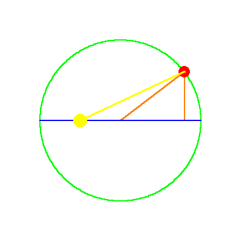 |
"But given the mean anomaly (time elapsed-bmd), there is no geometrical method of proceeding to the equated, that is, eccentric anomaly (position bmd). For the mean anomaly is composed of two areas, a sector and a triangle. And while the former is numbered by the arc of the eccentric, the latter is numbered by the sine of that arc multiplied by the value of the maximum triangle, omitting the last digits And the ratios between the arcs and their sines are infinite in number. So, when we begin with the sum of the two, we cannot say how great the arc is, and how great its sine, corresponding to this sum, unless we are previously to investigate the area resulting from a given arc; that is, unless you were to have constructed tables to have worked from them subsequently.
"This is my opinion. Insofar as it is seen to lack geometrical beauty, I exhort the geometers to solve me this problem:
Given the area of a part of a semicircle and a point on the diameter, to find the arc and the angle at that point, the sides of which angle and which arc, encloses the given area. Or, to cut the area of a semicircle in a given ratio from any given point on the diameter.
It is enough for me to believe that I could not solve this a priori, owing to the heterogeneity of the arc to the sine. Anyone who shows me my error and points the way will be for me the great Apollonius."
Thus, having rejected Aristotle's perfect circles, Kepler had to measure the planet's motion not merely by the arc of a circle, but by the relationship of that arc to its sine. However, as Cusa had indicated, the ratio of the sine to the arc is "infinite". Thus, the physical motion of the planet depended on a quantity whose characteristics could be precisely known, but could not be precisely calculated. The ellipse was not the orbit, it was that which is lawfully produced by the principle of universal gravitation.
Kepler did not directly observe this elliptical orbit, and to this day neither has anyone else. Nevertheless, the elliptical orbit was known to Kepler (and is known to anyone who relives his thoughts), more surely than if it had been directly seen. However, there is something more to the planet's orbit. The ellipse is only the visible manifestation of the principle of universal gravitation, produced by the always changing action of gravitation on the planet at every moment of its motion.
The question posed by the paradox of the "Kepler Problem" is: what is the hidden characteristic of universal gravitation that produces the elliptical shape of the orbit?
Since that characteristic cannot be seen, it must be discovered through the paradox it presents in its visible expression. That paradox is the indeterminacy expressed by the "Kepler Problem". The paradox does not exist for the planet. The planet "knows" at all times what it is doing. It moves seamlessly; always changing. The paradox exists in the expression of that continuously changing orbit within the visible domain of the elliptical orbit, through, as Kepler expresses it, the infinite ratio of the sine to the arc.
Leibniz' Infinitesimal Calculus
What was required to solve this paradox was a new type of geometry that could express the relationship between the seen and the unseen. That is what Kepler demanded, and that is what Leibniz supplied.Working from Fermat's method of inverse tangents and maximum and minimum, Pascal's investigations of conic sections, and Huyghen's development of involutes and evolutes, Leibniz invented the infinitesimal calculus as a new type of geometry that expressed not only what was seen, but the relationship of what is seen to the principles that lay behind it. For reasons that will become clear below, Leibniz' calculus, though inspired to solve the "Kepler Problem", didn't provide its solution. Such a solution would require Gauss' discovery of the complex domain.
The most direct means of grasping the principles of Leibniz' calculus is through his, and Johann Bernoulli's application of the calculus to the solution to the catenary problem. As has been developed more thoroughly in other locations, the catenary expresses a principle of universal least-action. That principle is what produces the unique shape of the catenary, which, like the planetary orbit, acts on the hanging chain differently at each point. But unlike the planetary orbit, the catenary does not conform to a conic section.
To determine the shape of the catenary, Leibniz and Bernoulli first investigated the physical manifestation of this continuously changing least-action. This is most easily demonstrated pedagogically by the often cited experiment showing the physical determination of the catenary curve using a string and a hanging weight. (See Riemann for Anti-Dummies 46.) As Bernoulli showed in his treatise on the integral calculus, the total effect of the principle of least action is expressed by the general shape of the catenary, while its continuously changing manifestation at each (infinitesimal) point along the chain, is expressed by the relationship between the sines of the angles formed by the tangents. (See Figure 2.) In other words, the principle of least action exists outside the catenary, but "touches" it at every point as if it were acting tangent to the curve. Consequently, the continuously changing relationship of these tangents produces a visible expression of the everywhere present, but non-visible, principle of least action.
|
Figure 2
|
As this crucial example of the catenary illustrates, the infinitesimal calculus is not the geometry of the domain of sense-perception. It is the geometry of the interaction between the domain of sense-perception and the principles that lie behind it. It is a generalization of Kepler's method of measuring the planet's motion in any given interval, by its relationship to the whole orbit. It is in that relationship, of the whole (integral) to the part (differential) that expresses the interaction of the unseen to the seen. That which is seen is produced by the unseen acting according to a discoverable principle at each infinitesimal interval.
As mentioned above, Bernoulli's application of the calculus to the catenary problem demonstrated that, like the planetary orbit, the physical principle governing the catenary was dependent on the sine of the angle. But, Leibniz further demonstrated that the catenary curve was also determined by another type of relationship that he called logarithmic. (See Figure 3.)
|
Figure 3 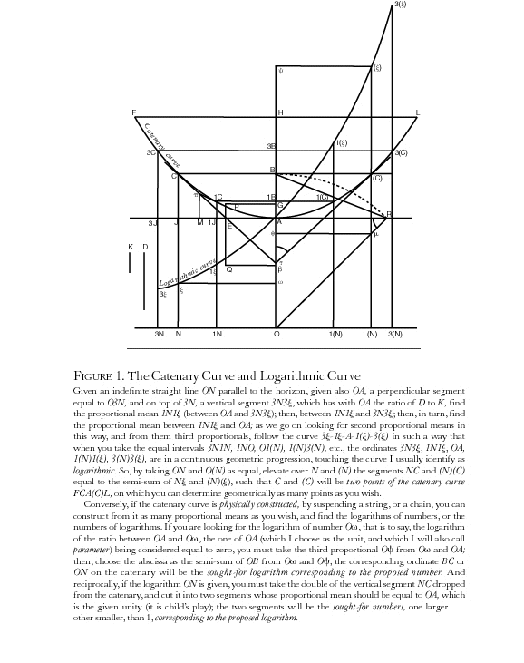 |
As has been developed more fully in earlier installments, this logarithmic relationship is the generalization of the principle of higher powers that was developed by the Pythagorean- Socratic current in Classical Greece, as typified by the investigations into the doubling of the line, square and cube. As Plato emphasizes, each type of action is associated with a magnitude of a different power, which are each mutually incommensurable. The more general form of these types of powers is expressed by the logarithmic spiral and the exponential function. Provoked by the type of discovery expressed by the catenary, Leibniz investigated this more general form of these "Platonic" powers, and discovered that they were related to a still higher power, expressed through the form of the so-called "natural logarithm".
This type of discovery led Leibniz to distinguish between two types of magnitudes transcendental and algebraic. The algebraic are those types of magnitudes exemplified by the powers that double the line, square and cube. The transcendental are those types of magnitudes exemplified by the trigonometric and the exponential functions. As Cusa had insisted, the transcendental powers are a higher type. All algebraic magnitudes can be generated from transcendentals, but not the inverse.
As mentioned above, the planetary orbit, while dependent on a transcendental function, i.e., the sine, is expressed by a conic section, i.e., an ellipse. Apollonius had already demonstrated, as was later expanded by Fermat and Pascal, that the conic sections expressed the relationship of the second (square) algebraic power.
As such, Leibniz distinguished between those types of curves, such as conic sections, that could be expressed algebraically, and those, like the catenary, that could only be expressed by transcendental functions.
The catenary in particular, however, expressed a relationship between the two types of transcendentals. On the one side, as Bernoulli showed, it expressed the trigonometric, whereas on the other side, Leibniz showed it expressed the exponential. Thus, the physical principle of universal least-action indicated a connection between these two types of transcendentals. Yet, mathematically these two types of transcendentals appeared to be generated differently.
It is in the investigation of the connection between these two types of transcendentals that Leibniz encountered the square root of minus 1. He expressed this as the paradox of logarithms of negative numbers. (See Riemann for Anti-Dummies Part 38.) He insisted that these logarithms existed, but not in the visible domain, but in a domain still to be imagined. As he discussed the matter in a letter to Huygens, "... there is almost nothing more to be desired for the use which algebra can or will be able to have in mechanics and in practice. It is believable that this was the aim of the geometry of the ancients (at least that of Apollonius) and the purpose of loci that he had introduced.... "
He was convinced that the square roots of negative numbers provided the paradox that would open the door to this new domain where the interaction between the seen and the unseen could be expressed. He referred to them, as "amphibians somewhere between being and non- being".
Gauss, The Kepler Problem, and The Complex Domain
It was left to the young Gauss, when he was between the ages of seventeen and twenty, to discover that the higher transcendentals to which Leibniz had pointed, demand the development of the complex domain as that thought-object through which the interaction between the seen and the unseen could be expressed. Herein would emerge the source of the "Kepler Problem" that the motion of the planets in elliptical orbits are governed not by the circular transcendentals, but by a higher form of "elliptical" transcendental, the characteristics of which could only be discovered and expressed in the complex domain.
Gauss never published his findings, except to indicate in a famous remark in the "Disquisitiones Arithmeticae", that his method for the division of the circle could also be applied to other transcendentals, particularly the lemniscate. Gauss promised to publish these results in a future time. But, due to the oppressive conditions brought on by the rise of Napoleon and its aftermath, Gauss never brought forth the promised text. His remark, however, prompted two brilliant youth, the Norwegian, Niels Henrik Abel, and the German, C. G. Jacobi, (both of whom were students of Gauss's collaborators, Hansteen and Dirichlet , respectively) to independently develop these results. Upon seeing their work, Gauss remarked that he had already developed this theory when he was a youth. At the time, these comments were dismissed as arrogant boasting by those in the scientific community who were submitting to fascist terror, as exemplified by the supreme bigot, Augustin Cauchy.
Nevertheless, Jacobi believed Gauss was right, writing in Crelle's Journal in May 1839, that it was the investigation of elliptical transcendentals which led Gauss to introduce complex numbers . Yet, it wasn't until 1898, when Gauss' youthful diaries became available, that the truthfulness of Gauss's statements was fully confirmed.
From a review of these diaries, it is clear that from the beginning, Gauss was engaged in one unified investigation: the development of the complex domain as that idea necessary to express those higher transcendental relationships governing the physical universe.
While popular academia grudgingly admitts today that Gauss was the actual discoverer of elliptical functions, they still falsely present this discovery as an extension of the formal algebraic approach of Euler and Lagrange. While Gauss' 1799 dissertation already exposes this as a lie, the diaries give an even more complete picture of Gauss' train of thought.
The diaries begin on March 30, 1796, with the announcement of the discovery that the 17-gon is constructible by straight-edge and compass. As has been developed in other locations (Riemann for Anti Dummies Parts 30 and 31 and JBT's lecture on the heptadecagon in L.A.) Gauss' discovery depends on recognizing that the visible circle is an artifact of a process that can only be expressed in the complex domain. From the standpoint of the visible domain, it appears that the circle can only be divided into 2, 3, or 5 parts by straight-edge and compass, as was believed for more than two thousand years. Yet Gauss showed that the principle on which the division of the circle depends, can only be expressed in the complex domain. From this standpoint, the division of the circle is seen as the more general form of the ancient Greek problems of doubling the square and the cube.
The doubling of the square and cube are determined by those principles that generate one or two means, respectively, between two extremes. Gauss showed, that from the standpoint of the complex domain, the division of the circle into "n" parts is the problem of finding the principle that generates "n-1" means between two extremes. If "n-1" is 2 to a power of 2, then the problem can be transformed into a succession of square roots, and is susceptible of being constructed by straight edge and compass.
Work through Gauss' method for dividing the circle for yourself, using the above cited pedagogicals as guide. For this discussion, bear in mind this crucial point. An action that is carried out in the visible domain, dividing a circle into "n" parts, is determined by a set of relationships that cannot be expressed in the visible domain. Rather, those relationships can only be expressed in the complex domain, where the interaction between the visible and the principles that lie behind it, can be made manifest.
Is the complex domain real? You can actually, with straight-edge and compass, divide a visible circle into 17 equal parts. But you cannot know how, or that you even can, accomplish such a task, unless you investigate, as Gauss did, the principle on which that act is accomplished, in the complex domain.
During this time, Gauss was also investigating the "Kepler Problem", and began to recognize what had blocked its solution. The general characteristics of the problem can be illustrated pedagogically in the following way:
The circular trigonometric transcendentals vary periodically according to the angle a moving radius makes with a fixed diameter. (See Figure 4, Animation 1.) The circular sine has a period of 0 to 1 to 0 to -1 and the cosine from 1 to 0 to -1 to 0, as the radius rotates around the circle. For every one rotation, this cycle repeats. Thus, for example, the sine of 30 degrees, 390 degrees, 750 degrees are all the same.
|
Figure 4 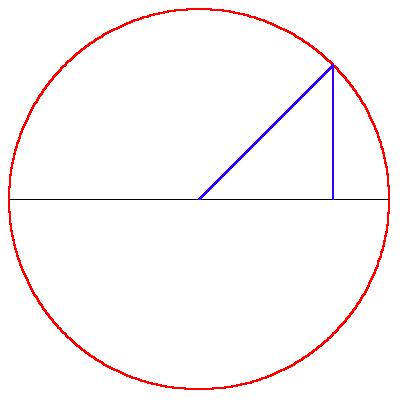 |
Animation 1 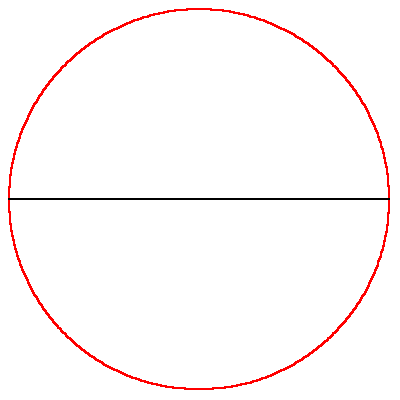 |
However when this same relationship is extended to an ellipse, something dramatically changes. In an ellipse the length of the radius changes as it moves around the circle. (See Figure 5, Animation 2.)
|
Figure 5 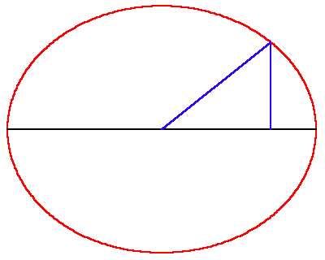 |
Animation 2 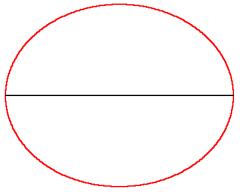 |
But how much it changes relative to the angle depends on the eccentricity of the ellipse. (See Figure 6, Animation 3.)
|
Figure 6 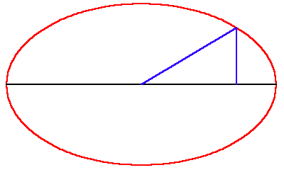 |
Animation 3 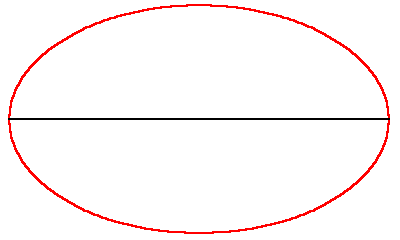 |
At Kaestner's prompting in the Spring of 1796, Gauss sought the more general principle on which his method for dividing the circle depended, by extending that investigation into the division of non-uniform curves. While aiming for the elliptical functions, he set his first attack on the simplest case of such a function: the lemniscate.
The lemniscate is a special case of an elliptical curve. It looks like a figure 8 (See Figure 7)
|
Figure 7 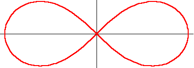 |
It was originally investigated by Jacob Bernoulli, who was investigating the physics of elastic rods. As such, it was originally known as the "curva elastica" until Bernoulli gave it the Latin name, "lemniscate", which means ribbon. The lemniscate is the locus of positions the product of whose distances from two foci is always equal to the square of the distance between the foci. (See Figure 8).
|
Figure 8 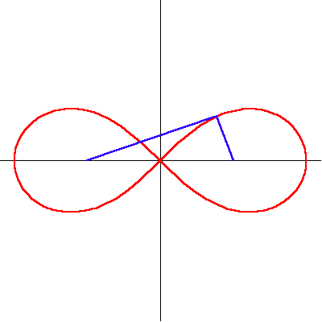 |
This property of the lemniscate has a similarity to the property of the ellipse. In the ellipse the sum of the distance from the foci to the curve is always a constant. (See Figure 9.) For the lemniscate it is the product of the distances. However, unlike the ellipse which is an algebraic curve of the square power, the lemniscate expresses the quartic power. (There is a simple geometric demonstration of the above statement which would be a digression to develop here. The reader is encouraged to discover it as a pedagogical exercise.)
|
Figure 9 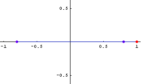 |
The lemniscate has another geometrical property important for this discussion. It can be formed by the inversion of a hyperbola in a circle. (See Figure 10.)
|
Figure 10 
|
Gauss' investigation into the lemniscate began no later than August 1796, when he wrote out a series of eleven "Mathematical Exercises" on various subjects. Of significance for this discussion is the fifth exercise, in which Gauss begins to develop the characteristics of what he would later call sinus lemniscatus, (lemniscate sine).
On January 8, 1797, Gauss wrote, " I have begun to investigate carefully curves dependent upon the leminiscate integral ."
This followed on March 19, 1797, by an entry announcing that the division of the lemniscate into "n" parts depends on "nn(t√-1) power, accompanied by the additional notation: "Imaginary quantities: The general criteria are sought according to which it is possible to distinguish complex functions of many variables from the non-complex ones." (the cited symbolic notation reads: n times n raised to the t times square root of -1 power.)
Gauss' method of the division of the circle and his generalization to the lemniscate and the elliptic functions, makes use of his clear geometrical understanding of the complex exponential. Protests from formalist sycophants not withstanding, Gauss' idea is completely different than Euler's formal algebraic mish mash peddled in virtually every text book today.
Gauss had this concept early on. On August 14, 1796, he wrote, "By the way, (a + b√-1)(m + n√-1), has been explained." And two days later, he wrote, "The highest things are already of the mind. Let it stand firm in order that they be protected." (Note: the cited notation reads: a plus b times the square root of -1 raised to the m plus n to the square root of -1 power.)
The Lemniscate and Elliptical Functions
We can get a preliminary taste for Gauss' discovery of the elliptical transcendentals by investigating them using the geometrical methods established by Gauss and developed more fully by Riemann. In this way we will obviate, at least for now, the unnecessary use of formalism, which otherwise might be required for a more complete investigation. This is a method that both Gauss and Riemann emphasized, stating in numerous locations, that while certain relationships can only be expressed initially as formulae, the results can be given much better clarity through geometrical representation. It must be born in mind, as Gauss emphasized:"The demonstration is presented using expressions borrowed from the geometry of position, for in this way, the greatest acuity and simplicity is obtained. Fundamentally, the essential content of the entire argument belongs to a higher domain, independent from space, in which abstract general concepts of magnitudes, are investigated as combinations of magnitudes connected by continuity, a domain, which, at present, is poorly developed, and in which one cannot move without the use of language borrowed from spatial images."
Look at figure 11 showing the lemniscate as the inversion of the hyperbola in the circle. Now, let's investigate the principles that generate this relationship among these three functions, through the method of complex mappings as developed by Gauss in his work on curved surfaces and later extended by Riemann.
|
Figure 11 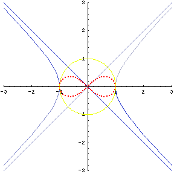 |
The mappings we will investigate all depend on the complex exponential as Gauss indicated in his August, 14, 1796 notation. As was illustrated in Riemann for Dummies 48, the complex exponential can be represented geometrically as a stereographic projection. Under this mapping, the arithmetic relationships of one surface are transformed into geometric relationships on another. As, for example, the lines of latitude and longitude on a sphere are transformed into exponentially spaced concentric circles and radial lines on a plane. (See Figure 12)
|
Figure 12 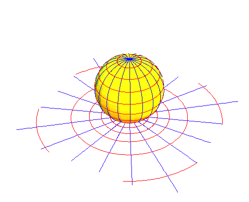 |
When this same complex exponential is mapped from one plane to another, it is expressed by the transformation of a grid of equally spaced lines into the same exponentially spaced concentric circles and radial lines of the stereographic projection. (See Figure 13)
|
Figure 13 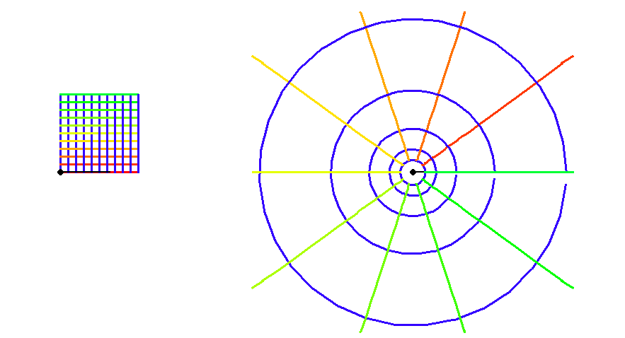 |
WARNING TO THOSE INFECTED WITH CARTESIANISM: These mappings are not graphs. They indicate the transformation of one set of least action physical relationships into another by the introduction of a new physical principle.
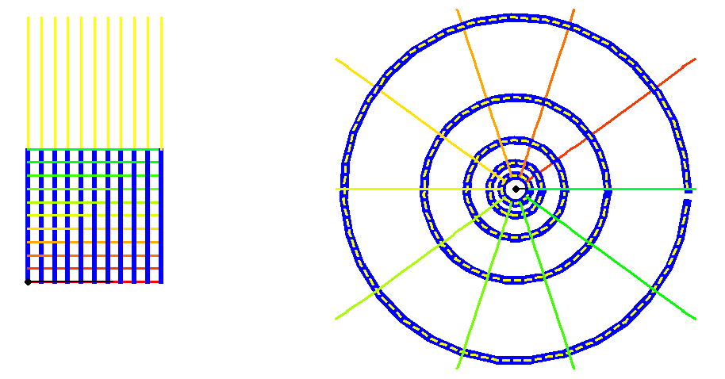 Figure 14 |
Of particular importance for this discussion, is the periodicity of the complex exponential. (See Figure 14, Animation 4.)
|
Animation 4 |
From this standpoint, let's unfold the hidden relationships among the hyperbola, circle and lemniscate. To do this, we adopt Gauss' method of inversion. Instead of investigating the circular, hyperbolic and lemniscatic functions as derived from the relevant curves, we investigate how the curves are derived from the relevant functions.
Begin first with the circle. Think of the circle as that which is produced by a right triangle whose hypotenuse is constant, but whose angle varies. It is obvious that the circle is generated by two periodic functions: the sine and the cosine.
Now turn to the hyperbola. The hyperbola is generated by a rectangle whose sides change but whose area remains the same. (See Figure 15). This constant area determines two functions, the hyperbolic sine and cosine. (See Figure 16). However, it is evident from the figure, that unlike the circle, the hyperbolic sine and cosine are not periodic. The are always getting bigger and bigger.
|
Figure 15 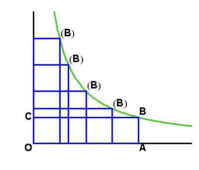 |
Figure 16 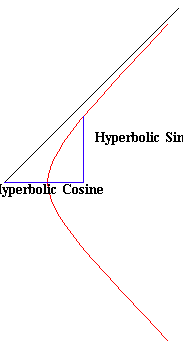 |
Now look at the lemniscate. Gauss defined two transcendental functions for the lemniscate, called the lemniscatic sine and lemniscatic cosine (See Figure 17)
|
Figure 17 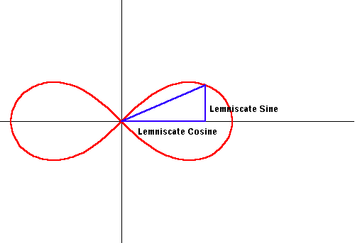 |
Something strange happens when we examine these functions. If we apply Gauss' method of inversion, and derive the lemniscate from these functions, we see that to define the entire lemniscate, the sine appears to have two periods for each full rotation and the cosine appears to have one. (See Animation 5).
|
Animation 5 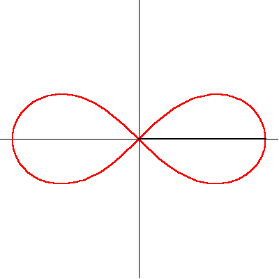 |
Keep this curiosity in mind.
As developed in the previous installments on hyperbolic functions (See Riemann for Anti-Dummies 33) the hyperbolic cosine is expressed physically by the catenary, (See Figures 18 and 19) and as such can be expressed by the exponential.
|
Figure 18 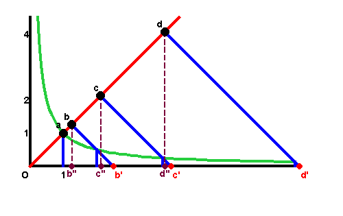 |
Figure 19 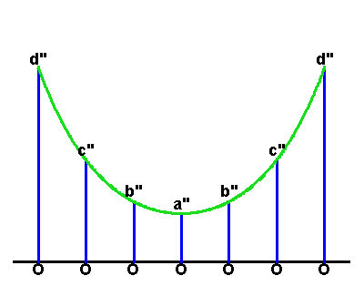 |
When this principle is expressed as a Gauss- Riemann complex mapping, the hyperbolic functions are formed from the midpoint of a line joining two of the circles formed by the exponential, that are rotating in opposite directions. (See Animation 6). From this standpoint, a periodicity emerges that otherwise had remained hidden.
|
Animation 6 
|
Now, look again at the circle. As Leibniz indicated, the circular functions are also expressions of the complex exponential. (See Riemann for Anti-Dummies Parts 37 and 38.) (See Figures 20 and 21). When these functions are expressed as a Gauss-Riemann complex mapping, the full expression of their periodicity is brought forth. They too are formed by the countervailing rotations of the exponential circles, but these circles are formed from the mappings that are at right angles to the hyperbolic.
|
Figure 20 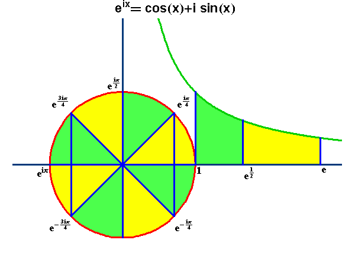 |
|
Figure 21 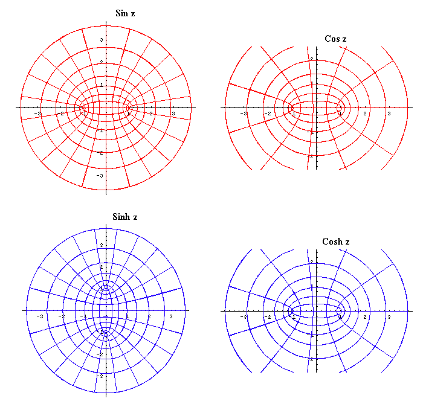 |
In sum, the circular and hyperbolic functions form the four possible variations of the mappings of the complex exponential. This brings out a unity between the hyperbola and circle that lies behind their visible appearance as conic sections, but on which that visible appearance is based.
In these examples we can see how the complex domain provides the means to create a synthetic visualization of the interaction between the visible domain and the unseen principles that lie behind it.
Now, look at the lemniscate. To unfold the lemniscate, Gauss applied the same principle of inversion illustrated above for the circle and hyperbola. A further elaboration of Gauss' discovery will be developed in a future installment. But the characteristic of Gauss' discovery is evident from the geometric characteristics that emerge when the lemniscate functions are expressed in the complex domain.
What Gauss discovered was that the lemniscate functions, and more generally, the elliptical functions are all doubly periodic. (See Figures 22, 23, and 24). This is no where evident from the relationships that appear in the visible domain. Furthermore, he demonstrated that the circular and hyperbolic functions were special cases of the higher class of elliptical transcendentals.
|
Figure 22 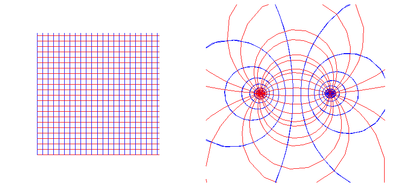 |
|
Figure 23 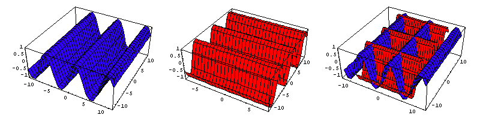 |
|
Figure 24 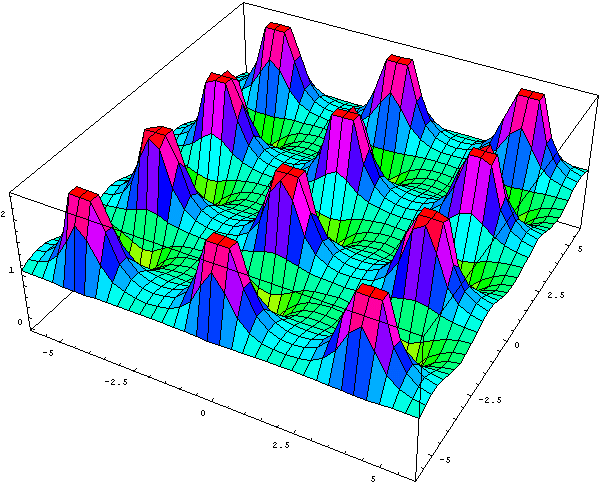 |
From this standpoint, Gauss established that the ellipse was governed by a higher type of transcendental which subsumed the circular, hyperbolic and exponential transcendentals. But these higher transcendentals were only expressible in the complex domain. In other words, the principles on which the planetary orbits really depended, were reflected by, but not visible in, the domain of sense-perception, or its representation. To passion to know these principles demanded the development of the complex domain.
Ironically, Kepler's approach for calculating an approximate solution for the "Kepler Problem", is essentially still the best approach for determining the position of a planet in its orbit. But Gauss' determination to investigate the paradox it revealed, led to his discovery of those higher transcendentals on which the underlying principles of planetary orbits are based. This paved the way for even deeper investigations.
{kind=link}
{kind=link}
{kind=link}
{kind=link}
{kind=link}
{kind=link}
{kind=link}
{kind=link}
{kind=link}
{kind=link}
{kind=link}
{kind=link}
{kind=link}
{kind=link}
{kind=link}
{kind=link}
{kind=link}
{kind=link}
{kind=link}
{kind=link}
{kind=link}
{kind=link}
{kind=link}
{kind=link}
{kind=link}
{kind=link}